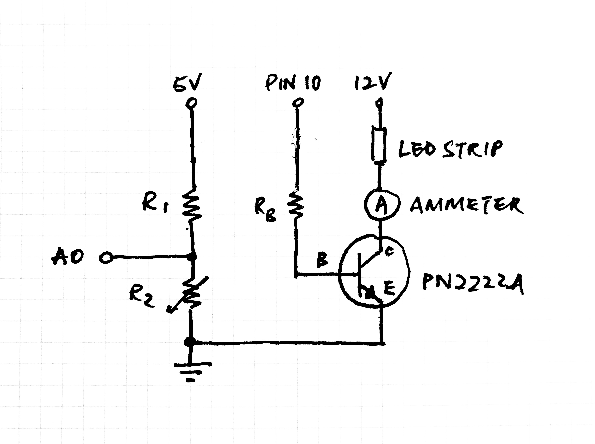
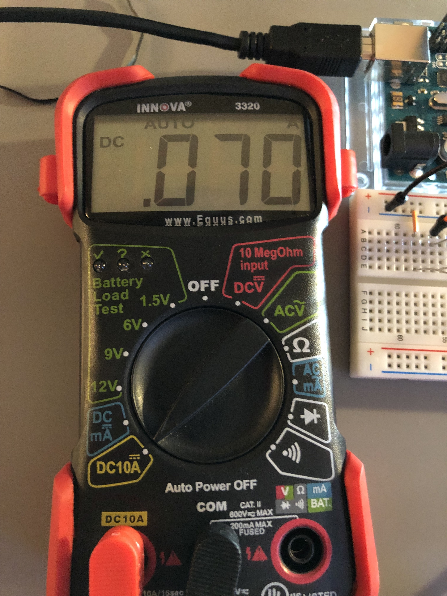
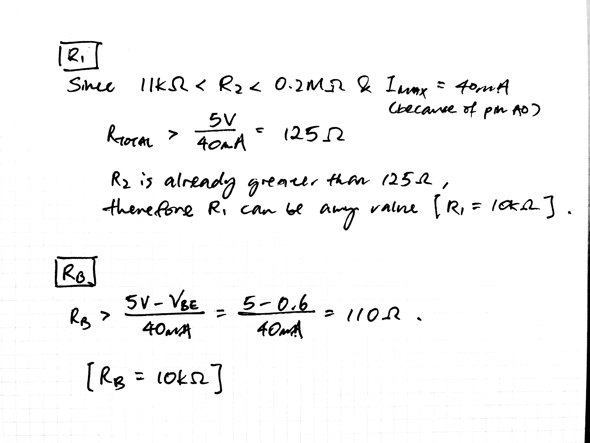
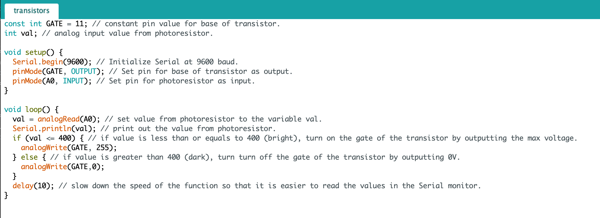

Schematic

In this circuit, the same voltage divider circuit as Assignment 3 is used here to measure the voltage drop across the LDR using pin A0. PIN 10 is used as the voltage source for the base of the transistor with a resistor connected in series to prevent an over-supply of current. The LED strip connected to a 12V power supply is connected to an ammeter in series and then to the collector of the transistor. The emmitor is connected to ground.
Current Through LED Strip

To ensure that the current through the collector-emitter does not exceed 0.6A. An ammeter is connected in series with the LED strip to measure the current at all times. When the transistor's gate is on, the current through is only at 0.07A (70mA).
Resistance Calculations

The calculations for R1 is the same as that of Assignment 3 since the same circuit is used. For RB, it is derived from the fact that I/O pins have a max current of 40mA. Since the activation voltage for the transistor is around 0.5V - 0.6V, RB should be greater than 110Ω. According to Nadya, a good rule of thumb for resistors connected to transistor bases are 10kΩ and above.
Arduino .ino File

The range of input values coming from the photoresistor pin is initially determined using the serial monitor. After knowing the range for the given environment, I set up the if statements for the LED strips (around 400 this time).